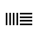

🎨 24 paid apps · 75 free alternatives
Free Design & Creative software
Photo editing, illustration, video, audio, animation and 3D without the subscription. Free and open-source replacements for 24 paid apps.
 Quit paying forAdobe Photoshop
Quit paying forAdobe Photoshop
Photo editing and raster graphics
Quit paying forAdobe Illustrator
Vector illustration and logo design
Quit paying forAdobe Premiere Pro
Video editing
Quit paying forAdobe After Effects
Motion graphics and visual effects
 Quit paying forFigma
Quit paying forFigma
UI design and prototyping
Quit paying forAdobe Lightroom
RAW photo editing and photo management
Quit paying forAdobe Audition
Audio editing
Quit paying forAdobe InDesign
Page layout and desktop publishing
Quit paying forCinema 4D
3D modeling and animation
 Quit paying forCamtasia
Quit paying forCamtasia
Screen recording and tutorial videos
Quit paying forCanva Pro
Graphic design and social media visuals
 Quit paying forFinal Cut Pro
Quit paying forFinal Cut Pro
Video editing on Mac
 Quit paying forFL Studio
Quit paying forFL Studio
Music production and beat making

Quit paying forAbleton LiveMusic production and live performance
Quit paying forAdobe Animate
2D animation
 Quit paying forAutoCAD
Quit paying forAutoCAD
2D and 3D CAD drafting
Quit paying forSketchUp
3D modeling for architecture and interiors
Quit paying forCapCut Pro
Quick video editing for social media
Quit paying forVEGAS Pro
Video editing on Windows
 Quit paying forCorelDRAW
Quit paying forCorelDRAW
Vector graphics and illustration
Quit paying forLogic Pro
Music production on Mac
Quit paying forPro Tools
Audio recording and mixing
Quit paying forAutodesk Maya
3D animation and modeling
Quit paying forSnagit
Screenshots and quick screen recordings